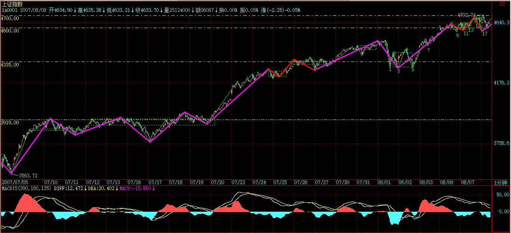

(2007-08-21 22:37:20)
任何事情，都有缘起。
本ID是个大杂家，本ID现实中最终的落脚处，是文化的总构建，所谓三教九流，彻底穷源地玩弄一把。虽然，经济上，本ID早就可以天天腐败什么活都不干了，但现在又没老到要在书斋里天天写书的地步，本ID觉得，那至少是40岁以后才能干的事情。因此，本ID在网上写东西，纯粹是顺着形势来，并没有什么计划。【韶山映山红】缠师并没有准备开始把自己的实践理论化的工作，所以随性而写，使得缠论呈现出一个逐渐建立理论体系的进化过程。】
写关于股票的事情，对于本ID来说，不过是把本ID这十几年天天干的事情复述一下。正如在课程开头，本ID说的“‘教你炒股票’这样的题目，全中国不会有第二人比本ID更适合写的。”当然，这种话招人恨的，不过却是事实。
和股票相关的事情千奇百怪，本ID是什么都经历过，所以，开始写的时候，并没什么主题，只是漫谈。【韶山映山红】没有考虑系统阐述。估计也没有准备好。】
但对一般散户来说，听些掌故没什么实质意义，说消息面，肯定也没什么意义。如果你消息灵通到公布什么利好利空前都是第一时间知道，那么就没什么可说的。【韶山映山红】散户的弱势特征。】
而对于散户来说，那种靠拿着原始股就可以翻几十几百几千倍的时代早过去了。【韶山映山红】缠师的第一桶金就是原始股。】
靠研究公司基本面买股票，那种积累速度太慢，只适合大资金。其实，一切关于基本面的研究，最终都归于行业或总体经济的发展。最简单、最不伤脑筋的方法，本ID也说过，就是买指数基金、或者具体行业、板块的基金。对于散户来说，你对基本面的研究能力要超过一个好的基金团队的可能性是微乎其微的。至于指数基金，那就更不用说了，至少你肯定不会跑输指数。【韶山映山红】总体经济的发展是大环境，行业经济的发展是小环境。基本面是投资，是战略层面的。炒股是投机，战术层面的。】
对于散户来说，最终能战胜市场、获得超越市场的回报的，只有在本ID所说的乘法原则下的技术面操作。
技术面是三个独立系统里的一个，而另外两个，例如比价关系与基本面，可以配合决定你的介入种类。但当介入到一个品种后，技术面在操作上就起着决定性的意义。
为什么？因为其他的面，变化的频率都没有技术面高，像基本面，其变化大致是有一定的稳定性的，不可能天天都是奇点、断裂点。【韶山映山红】“奇点”本是天体物理学术语，是指“时空中的一个普通物理规则不适用的点”。断裂点，该点附近的微小变动会带来结果的明显变化。】比价关系也一样，一种比价确立后，就基本保持稳定了，不可能天天都变化。所以这种变化少的系统，不需要花太多精力去研究，而技术面显然不同。【韶山映山红】比价关系与基本面都是稳定系统，所以股价变动有另外的驱动因素，技术面就研究这些。】
【韶山映山红】第9课提出比价系统之后，这里是再一次谈到比价系统。
１，比价系统可以配合决定你的介入种类。
２，比价关系确立后，就基本保持稳定了，不可能天天都变化。在操作上就起决定性意义的是技术系统。】
所以，最终本课程开始说技术面是顺理成章的。
而技术方面，本ID的理论，肯定是关于技术方面最好的理论了，本ID本来是想在40岁退休后才写出来的，但大概是缘分到了，本ID也没刻意一定不写出来，所以就慢慢地写出来，而且现在还在写着。
开始时，本ID并没有认真想写整套理论，因为当时好在网上骂男人玩，所以开始写技术的，都是用些损男人开心的招数，当时说的只是均线系统，那东西和本ID的理论没什么关系，只是闹着玩的。【韶山映山红】缠师说均线系统与缠论的理论没有什么关系。前些天看到有人说缠论的精髓就是均线系统，无语。】
当然，如果真掌握了均线系统，也可以应付一定的情况了，例如，在日线单边走势中，最偷懒的方法就是看着一5日线就可以，而5周线就更是中线的关键，5月线是长线的关系。例如，为什么现在牛市的第一轮肯定没走完？很简单，你什么时候见过牛市的第一轮调整不跌破5月线的？这两年多，这5月线被有效跌破过吗？显然没有。
而第一次跌破5月线后，下面的10月、30月线上来，自然构成新的调整底部，后面自然还有一波大的。
后来开始写于本ID理论有关的东西，开始，只是想把一些有用的结论告诉各位，因此课程都不是按正式的理论框架写的。【韶山映山红】前面的是水面上的结论，后面的才是水面下的冰山。】
本ID的理论，本质上分两部分，一是形态学，二是动力学，当然三就是两者的结合。
如果按正式的课程，那肯定要先讲形态学。但如果不说动力学，那至少背驰是没法讲了，然后中枢震荡也不可能用类背驰的方法去判别，第一类买卖点也无法说了。而所有买卖点，归根结底都是第一类买卖点，那这样，要把形态学和动力学都说完，才说第一类买卖点，估计所有看的人都会晕倒。
所以，当时把于初学者有用的一些简单结论先说了，就是让各位有点实践的乐趣，当时000999刚好在6元，还很明确地说了，买这股票，就当本ID把你要给市场交的学费都给各位准备好了，就是让各位耐心学下去，拿着一个长线股票，至少比你到处乱跑要强点。【韶山映山红】000999三九医药，2010.02.24变更为华润三九。2006.12.13涨停，5.77元。】
这样安心学习，也是不错的。当然，有能力的，也就可以边学边实践，这没有任何需要统一规划的地方。
站在纯理论的角度，形态学是最根本的。【韶山映山红】纸上谈兵，形态学。】
形态学，从本质上就是几何，这部分内容，是无须任何前提的。
以前说的本ID理论成立的前提，其实并不是针对这部分的，主要是针对动力学部分。【韶山映山红】缠论成立的前提：价格充分有效市场里的非完全绝对趋同交易。是针对动力学的。】因此，就算一个庄家自己全买了，一个人天天自我交易，也永远逃不出形态学画的圈圈。
而动力学方面的东西就不同了，必须有本ID要求的那两个前提：价格充分有效市场里的非完全绝对趋同交易。
动力学，是属于物理范畴的，但站在更高的层次上看物理，物理的本质就是几何，当然，这是所有物理学家都不可能认同的，但如果用一些几何结构就可以把所有物理的常量给搞掂，那物理学家不认同也是白搭。
同样道理，本ID理论里的动力学部分，本质上也是几何，只是这种几何比较特别，需要把价格充分有效市场里的非完全绝对趋同交易作为前提转化为某些几何结构，【韶山映山红】哪些几何结构？★可以做个专题，以后研究。】然后构造出理论的证明来。【韶山映山红】为什么开盘竞价的跳空缺口的处理方法与一般K线不一样？因为在那个时点，趋同交易的程度不一样。】
所以，本ID理论在整体上依然只是几何，只是需要有价格充分有效市场里的非完全绝对趋同交易的前提。
而且，最终的理论，当然不会涉及那些基本上谁看都会晕的几何结构，而是谁看都能看明白的当下的走势。理论和理论的证明那是两回事情。费马猜想谁都看得懂，费马猜想的证明，能全看懂的人不会超过1千万分之一。【韶山映山红】费马大定理：当n>2时，不定方程 x^n+y^n=z^n 没有正整数解。】
当然，本ID的课程，基本的逻辑顺序还是一直坚持的，【韶山映山红】所以从头到尾顺序学习也是没有问题的。基本的逻辑顺序包括哪些？★以后研究。】不过，如果是最终的课程，那么最开始的一章，肯定是形态学，和这课程的顺序大为不同。【韶山映山红】如果是成型的课程，就先从形态学开始讲。先从分型、笔、线段开始？★以后研究。】但现在，由于已经写成这样一种形态学和动力学混着说的状态，当然只能一直混着下去。
所谓形态学、动力学，其实很好分辨，
任何涉及背驰的，都是动力学的范围，背驰是动力学的基本点之一。【韶山映山红】运动的力学。】
另外，中枢、走势的能量结构之类的东西，也属于动力学。【韶山映山红】中枢和走势的形态结构是表，是形态学。中枢和走势的能量结构是里，是动力学。能量结构都包括哪些内容？★可以做个专题。以后研究。】
而形态学，就是中枢、走势类型、笔、线段之类的东西。【韶山映山红】直观的K线图形就是形态学，走出这些图形的原因分析就是动力学。画图画的是形态学，看图看的是动力学。形态学是“然”，动力学是“所以然”。】
【韶山映山红】中枢、走势类型、笔、线段之类的东西属于形态学，而形态学的结构又同时是一种能量结构，所以，形态即动力，动力必形态。★可以做个专题，以后研究。】
【韶山映山红】中枢作为一种能量结构，对走势总有回拉的力。这就是为什么三买和三卖靠谱的原因。股价运动挣脱了中枢，然后又被中枢回拉，但中枢不能把股价拉到中枢内，所以走势只有向外扩张。】
【韶山映山红】市场已有走势所形成的结构，本质上是一种能量结构，对当下产生的作用，就成为结构力。结构力是可观察、可分析的，所以就成为了预测未来的依据。】
【韶山映山红】背驰本身就是能量结构，所以各种背驰都会带来不同的、相应的走势预期。】
【韶山映山红】走势破坏就是对能量结构的破坏，所以有形态结构的要求。】
【韶山映山红】级别也是能量结构的体现。复杂结构是能量的消耗，也是一种集聚。而简单结构的能量释放就会体现出激烈，否则就是陷阱。】
其实，光用形态学，就足以形成一套有效的操作体系。只是在形态学中，由于没有背驰的概念，所以第一买卖点是抓不住了，但第二买卖点是肯定没问题的。【韶山映山红】知其然，被动操作。】
单纯用形态学去操作，就是任何对最后一个中枢的回拉后第一个与回拉反向的不创新高或新低的中枢同级别离开，就是买卖段。【韶山映山红】围绕中枢的离开、返回、再离开，不创新高或新低的再离开就是第二类买卖点。“同级别离开”说明不要求次级别。更低级别的中枢震荡也一样。】
【韶山映山红】这里的问题： １，没有动力学分析的时候，怎么知道是“最后一个中枢”？ ２，什么样的算第一次离开？突破[DD，GG]？ ３，“回拉”有什么讲究？ ４，这样的二买并不靠谱。那么，到底是不是真正的第二类买卖点，什么时候能做出判断？ ★以后研究。】
【韶山映山红】这里说“最后一个中枢”，说明是趋势。这里讲的背驰是趋势背驰。】
就算按照这么简单的方法，也可以很容易判断现在在日线上的操作思路，例如，去年5月和今年5月后的调整，算是同级别的，【韶山映山红】两个调整中枢是同级别的。】那么，其后的卖点就是，万一回拉4335点之下，任何第一次向4335点上的与回拉级别相同的不创新高的反抽都是卖点。【韶山映山红】现在是日线笔级别的离开，回拉中枢GG的4335点之下，意味着暂时没有中枢移动了，以后的反抽只要不再新高就是二卖。这里4335是中枢GG而不是ZG，判断回拉可能导致中枢扩张。这里只关注回拉，不管是次级别还是次级别以下级别。】
【韶山映山红】这个实例，“去年5月和今年5月后的调整，算是同级别的，”表明前提是已经形成了趋势，在没有趋势背驰的情况下，中枢离开段没有abc盘整背驰，也没有a+A盘整背驰，就不会有返回中枢的动作。所以只要回中枢，不管是什么级别的返回，不管有没有小转大，都要有中枢级别对应的操作。】
【韶山映山红】这个实例是530之后形成的日线笔中枢，笔的离开段形成之后，8月1日是有过一次“万一回拉4335点之下”的跌破。但是那个时候离开段还处于a+A盘整背驰状态，abc盘整背驰有小级别延伸破坏的迹象，所以不是这段原文讲的情况。】
【韶山映山红】用1分钟递归走势看，日线笔的离开段，实际上是一个5分钟上涨趋势，5分钟中枢离开段盘整背驰之后的1分钟回踩破了5335点，然后1分钟向上再次新高，在高位又形成了新的5分钟中枢。】

【韶山映山红】“与回拉级别相同”的意思是说，回拉什么级别，反抽就什么级别，要求这个一回一走同级别，不要求是次级别。同样的实例是530当天，5分钟上涨趋势的背驰段之后，线段级跌破、线段级反抽的二卖。】
如果一直没有回拉回到4335点，又在上面形成新的同级别中枢，那么操作的标杆就进一步提到那个中枢上，如此类推。【韶山映山红】盯着当下最后一个中枢。】
按照这种方法，那么从2005年中到现在，你都应该持股不动，为什么？因为没有卖点。【韶山映山红】一共3个日线笔中枢，没有日线笔级别的回跌中枢。】
【韶山映山红】2005年底的日线笔中枢。一次日线笔以下级别的跌破GG，然后新高。再后来没有跌破GG。】
【韶山映山红】2006年中的日线笔中枢。回踩跌破GG之后又新高。】
当然，实际操作，要针对具体个股，说指数只是举例子。
个股上，看000777在日线，6月20前后的一段，就可以看出类似的效果；
但如果你是看周线图的，那么现在的卖段还没有出现，而且可以明确地看出，其6-7月份的调整，不过是突破历史高位后的回抽过程，站在更大的视野上，看到更大的方向，如此而已。
当然，上面只是说如果只用形态学，也可以进行操作，但实际上，当然是动力学、形态学一起用更有效。所以，千万别认为以后就只用形态学了。
不过这里有一个用处，就是那些对背驰、区间套没什么信心的，可以先多从形态学着手。
而且，形态分析不好，也动力不起来。【韶山映山红】形态即动力，动力必形态。】
站在实际应用的角度，关于中枢的递归定义以及与从分型、笔、线段开始的最小级别定义之间的区别之类的东西，也是可以不管的，但这样，逻辑上就容易乱，所以，搞清楚没坏处。【韶山映山红】这里说可以不管的是递归函数的中枢和初始化函数的中枢之间的区别。早期只讲了递归，后来又重新规范更底层的初始化，学习的顺序反了，所以乱容易。递归函数和初始化函数是两套规则系统，感觉初始化函数隐含了很多动力学原理。可以做个专题，以后研究。】如果你实在特懒，那就从分型学起，这也可以。【韶山映山红】为什么从分型学起算是“实在特懒”呢？以后研究。】
下面，本ID给出一个懒人线路图：【韶山映山红】之所以叫做懒人线路图，不是说这个顺序是懒人顺序，而是说懒人可以只学这少量的几样东西，所以下文说“无论多懒”“请先把这几样东西搞清楚”。】
分型 - 笔 - 线段 - 最小级别中枢 - 各级别中枢、走势类型
上面几个东西，是形态学中最基本的，完全没有办法再简略了，所以无论多懒，如果真想学本ID的理论，那请先把这几样东西搞清楚。【韶山映山红】先定义中枢，再定义走势类型，然后定义级别。理论体系的建立，是这个顺序。划分走势也是这个顺序。所以缠师给出了懒人路线图。】
关于形态学，后面还有很多内容，最主要是关于各种与结合律相关的问题。【韶山映山红】哪些与结合律相关的问题？★★★可以做个专题，以后研究。】
当然还包括世界上所有有关股票的理论中关于形态部分的理论，根据本ID的形态学，例如什么K线理论，波浪理论之类的玩意，都可以从本ID的形态学中严格推出，而且，本ID还可以指出他们的缺陷以及原因。这个工作是必须干的，彻底穷源的其中一个方面，就是要包罗万象。
注意，有时候课程是由浅入深，前面不严格的，后面引进新概念后，就可以严格定义了。例如，最开始时，说上涨、盘整，都是用高、低点之类的东西，因为当时没说中枢，所以不可能严格定义，后来说了中枢，就可以给出严格定义。【韶山映山红】缠论就是这样进化的，先是粗糙的，然后建立更多的定义，使体系逐步清晰明确。】
再例如，64课里，由于没说特征序列的元素之类的概念，所以里面关于线段一些论述都如同用高、低点定义上涨、盘整一样，不太严格，到67课说了特征序列之类的东西后，定义就是严格的，所以在67课里，本ID说“本课，就是把前面‘线段破坏的充要条件就是被另一个线段破坏’精确化了。因此，以后关于线段的划分，都以此精确的定义为基础。”【韶山映山红】64课里只是简单讲一下线段只能被线段破坏。65课有了笔破坏的定义，要求线段破坏必须有笔破坏。67课有了特征序列的定义，以特征序列的分型为笔破坏的依据，不再要求笔破坏。缠师的理论体系就是这样逐步建立起来的。有分歧的一般都以后面的为准。】
为什么说原来的不精确，因为按照原来没有特征序列的定义，那么线段里都要继续存在类似小级别转大级别的情况，而有了特征序列后，就不再需要这种情况了，这样才能把线段给精确划分。【韶山映山红】第二种情况的小转大，没有封闭特征序列缺口的时候，按照走势类型分析的规则，不算小转大，线段不成立。后来的规则不再要求封闭特征序列缺口，第二种情况就多了一些线段成立的可能。】
由于本ID目前的讲课，一开始就没有按正常课程应该的顺序，所以，这种开始不精确后来再精确的情况才会发生。
本ID愿意先不引进复杂的概念，先把大方向给说了，然后再说复杂的概念。这样有一个好处就是，如果理解能力差的，可以接受简单，不太精确的方式，这样也没什么问题，也可以用。
例如，像特征序列的分型这样的概念，本ID就严重怀疑孔男人能理解的机会能超过10%。所以，如果不能理解精确的，就用不精确的，等有理解力，对市场再了解深了，再学精确的也可以。【韶山映山红】这也是千人千缠的一个原因啊。】
例如，如果你现在只能理解男上位、女上位，吻之类的东西，那也很好。关键是精通一样东西，精通就好，就怕半通不通。
所以，以后有问题，一定要问，把所有想解决的问题都解决才行。
当然，本ID无法回答所有问题，但有代表性的，一定会安排回答的。
(2007-08-22 08:37:19)
本来不想为昨天加息的公布说任何话的，因为确实没什么可说的，管理层只是干他们该干的事情，而投资者看着市场的反应去反应，不需要任何预测、猜测。任何的谈论，不过都是忽悠、站在自己利益上的广告而已。现在之所以写，只是站在一个非市场的立场上，为一次值得鼓掌的加息留下一笔。【韶山映山红】8月21日晚间，央行宣布年内第四次加息。央行明确表示，本次加息目的是“合理调控货币信贷投放，稳定通货膨胀预期。”】
这次加息，显然时机十分正确。
当然，反对加息的人肯定不这样认为。他们的理由无非是，美国人都要减息了，中国凭什么加息？这是典型的脑子进水想法。中美之间保持息差，不过是一种可能的生存状态；不保持息差了，难道就不是一种可能的生存状态。而且，本ID最讨厌看到任何美国怎么了中国人就要怎么的破烂言论，美国还911，你怎么不也跟着去？脑子有锈？
当然，现在并不是说管理层已经放弃了原来中美之间保持息差的基本态度，但这次加息，至少是一次完全以我为主的行为，从而使得管理思路上有了自我的性格，这就是好事情。
而且，如果要加，现在的时机是最好的，在世界对美国那些破烂事情反应稍有喘息的时候，效果显然是最好的。这次，本ID给管理层打100分。
当然，对于市场里的人，可能认为这次加息有调控的味道，特别昨天刚出个人到外面买股票的试点，今天又出加息。而现在又面临5000点，这个时机，显然有组合拳的味道。
这对也不对，为什么？虽然，理想的状态是少调控多监管，但现实如此，就是调控还是一种自然反应，就必须面对着现实，如果能达到一个调控的高境界，那就是一件可欣赏的事了。
【韶山映山红】对于央行货币政策对股市的影响，央行行长助理易纲认为“政策调控是一定会起作用的”。在一次接受媒体采访时，易纲说：“有人说，怎么货币政策越出台股市越涨？应该反过来想，正是因为股市在那里一个劲地上涨，所以要采取宏观措施来减慢泡沫扩大的速度，减少泡沫的影响。面对市场波动，政府一定要做事情，就是采取市场经济下宏观调控政策，包括货币政策，担负起提供公共服务、提供公共政策的职能，如果现在看到泡沫在起来，政府不采取政策是政府的失职。政策的目标就是抑制一种正在形成、正在恶化的趋势，以减小市场波动的风险。”】
显然，这次组合券，分寸、时机都拿捏得很好，在是不是之间。
所谓调控的艺术，就是让市场产生不同的预期，而不是统一的预期，这样的调控，就是最高明的调控。
当然，不能说以后的调控都一定能达到这样的水平，但至少现在是这样，所以，本ID要给管理层再加100分。
这次调控，对市场将产生不同的解读与预期，这样，市场的合力就不会产生一边倒的现象，这样，市场就可以在一定的时间内进行一定的磨合，最终去选择自己的方向。
目前，技术上的条件没有任何变化，日线上，背驰段依然成立去等待最后的确认或破坏，
短线，30分钟的中枢震荡依然，
超短线，最后一个5分钟的中枢震荡依然，
按照这些技术界限，与自己的操作级别，不难根据当下的走势去选择自己的操作。
对于技术学习不好的，就看5日线、5周线，不要为市场的消息所动，只看市场最终的反应，这是一个最基本的素质。
至于今天的走势，无非就是强中弱三种：
一、直接平开或者高开，不补昨天缺口，继续上攻，一旦出现这种走势，证明市场选择了这样的合力，因此，只要继续看着。不过这种状态，必须密切注意是否还有新的组合拳，一旦还有，就要注意2/3线与基本面产生的共振。
二、补昨天缺口后在附近震荡，这种走势，是一种平衡状态，就要看后面基本面的变化去选择突破方向。
三、直接跳空向下，形成岛型反转，这是最恶劣形态，短线的压力大，至少要再次考验8-17那个中枢。
其实，这些分类界限，都无须预测，让市场自己去选择，根据市场的选择去反应。
另外，一定要注意自己的操作级别，如果你是月线操作，那就看5月线，没有效跌破之前，都可以少管，任何的波动都可以当戏看。
另外，美国那破事，在如期反弹后续的发展，是决定今后走势的一个重要分力，这样因素在前面反复说过了。这可能比加息、组合拳都要根本点，毕竟，管理层的加息、组合拳都要参考这方面的因素综合给出。
(2007-08-22 16:10:16)
昨天说热点的蔓延如果能持续几天，就会燎原。而晚上公布的加息产生的新分力，使得大盘最后选择了今早所说的第二种中等力度的走势，这都是自然的选择，无须预测。任何有预测癖好的人，去当火星股评去吧，地球很危险的。【韶山映山红】“二、补昨天缺口后在附近震荡，这种走势，是一种平衡状态，就要看后面基本面的变化去选择突破方向。”】
今天的走势，从纯技术的角度，连一个线段都不一定100%确认完成了，为什么？因为都没100%满足线段完成的条件。该线段完成的判断，显然属于第一种情况，本来第一种情况是属于相对简单的。但由于特征序列的分型一直没有最终完成，每一次上冲都新高，而下来都是一笔，形成所谓的向上倾斜三角型走势，该走势的特点就是99%回跌到三角形启动的位置，尾盘的跳水满足这一跌幅，但只是一笔，所以如果明早一下高开在5000点之上猛烈上攻，不再回跌到5000点下，那这线段还真一时完成不了。
当然，一般情况下，这线段已经在今天的最高点处完成，所以在上面标记上56，但这是否最终确认，还要上面说的这种情况不发生。
一般来说，1分钟线段都不会延续这么长时间，【韶山映山红】一般来说，1分钟线段都不会延续一天。】能延续这么长时间，反而是一个技术上的重要提示，证明多方上5000点的冲动比较大，反复闹，而上面，有人不断压制，所以才会走出向上倾斜三角型的走势。而到尾盘，差不到一点见5000了，多方一股真气突然泻去，回到倾斜三角形起点位置。主要是如530般在亢奋状态突然被惊吓留下了后遗症，因此往往在关键时刻都来这么一下，尾盘收回去一半，只是表明多头上攻的欲望依然没得到满足，如此而已。
今晚的消息面很重要，连续两天有消息了，如果今晚还来什么调控玩意，这走势变数就大了。由于选择了第二种走势，短线政策面的变化起着重要分力的作用。如果今明两天没什么特别消息，使得关于政策面组合拳的猜想暂被搁置，那么，上上5000点去满足一下多头的欲望，也是理所当然的。
本ID早说了，5000点根本什么都不是，关键是5089点的2/3线，这线就如同下面4100多点的1/2，该线反复磨了三个月，上下跳来跳去，2/3线是否历史重演，这才是技术上需要注意的地方。
个股上，加息并没有延缓热点的蔓延速度，反而是加快了。银行股被压制，反而有利于其他股票的表现，本ID反复强调的二、三线股的逐步活跃已经成为现实，看看这几天涨停的都以什么股票为主就知道了。而且，这种蔓延已经逐步偏向三线股，特别是低价股，这是游资重新活跃的迹象。
这里，一个最现实的问题就出现了，银行股、地产股等等基金们玩的股票，和比较正规的大资金玩的一、二线大股，与游资搞的二、三线小股之间争夺话语权的问题。后面，能使大盘大幅度震荡的，一是政策面，二就是这话语权争夺战了。
散户当然喜欢三线股狂飞，像本ID的中铝那样的中字头股票，散户参与的热情也不会太高，特别现在，随便买个1万股就要40万，而一个5、6元的股票只要5、6万，哪个群众基础好就根本不用说了。
本ID对哪类股票飞都无所谓，本ID的持有结构本来就是一、二、三全有，大小通杀，现在又不买了，只持有，所以只有看戏的份。不过，本ID最喜欢的，其实是三线变一线的股票，谁又告诉你，三线不能变一线呢？【韶山映山红】谁是“三线变一线的股票”？以后研究。★★★】
今天有事，刚才一路写东西，电话就不断，下面的事够忙一晚上了。
晚上回来可能晚点。
先下，再见。
(2007-08-22 23:15:44)
回来太晚，3个来小时后，本ID要干一件超级幼稚的事情，大概要5点以后才能再睡，所以必须抓紧时间休息，帖子不能写了。
昨天说到物理与几何，就以此为题口占两首，各位将就着看，有兴趣的，请同看英德之战。
物理
缠中说禅
刍狗安知天地仁
自然轨则自成真
人生毕竟心缘物
物理何须神造人
分量相加成合力
玄能互涉化凡尘
时空翻覆超弦舞
幻作清江万叠粼
几何
缠中说禅
万象皆归数
乾坤重几何
时空旋卷曲
弦膜幻巍峨
力爆虚空态
场传物质波
纤维丛怒放
一束一星河
(2007-08-23 16:08:01)
没有三线股参与的行情，永远都是不完整的，行情只会在一地鸡毛中高潮，没有三线股鸡毛一地的高潮，这种行情，至少在中国特色的市场中，本ID还没见过。这里的原理很简单，一个爱好群众运动的文化中培养起来的投资者，连选秀都可以超女快男一地去鸡毛一把，股票不亦如此，怎么对得起博大精深这四个汉字？
这锅热度如期中升高，三线鸡毛开始满地打滚，这还只是开始，被一线大盘、高价股抛弃了的散户，才正开始撒着步子欢了起来。人类的本质是酒神性的，人的本质中，那酒神的狂欢永远可以战胜太阳的冷酷。狂欢，总是大众的。茅台、五粮液去大众，要困难点，还是二锅头、老白干，更能激发人们心里的野性。如此，股票的高潮，总是老白干的。
有人问，怎么还不说今天突破5000点的历史时刻？5000点算个什么？本ID不是一大早就把股市的20年走势的剧本都告诉各位了？5000点在那剧本中，连一句台词都够不上，有什么可说的？
站在纯技术上，突破1/2线，就看2/3线，然后就是3/4线。但现在，还是先看2/3线。从大盘对前几条线的突破看，都不是刚好触及就回头，而是围绕着其震荡。由于2/3线与3/4线之间距离不大，所以在这两线的震荡级别不大会一样，一般来说，2/3线小级别，那么3/4线级别就大点了。所以，行情在2/3线附近如何发展，对今后行情的发展，有一定的意义。
2/3线如何计算？1429+183*30*2/3=5089。3/4线，只要把里面的2/3改为3/4就可以。当然，下月计算时，183要变成184，如此类推。
短线技术上，昨天的56，不能100%的那种情况，今天发生了。这说明什么？本ID的理论是几何，没有一种精确的数学态度，是弄不好的。任何有预测癖好的，都离技术之门远着。今天图里，昨天56的位置就要根据这种情况变了。注意，并不是本ID的划分可以随意变，而是因为昨天的走势没有100%满足本ID的划分标准，只是暂时标记。例如，今天59，同样有这个问题，那里标记上59并不是说59在那里已经完成了，因为目前没有满足59段被100%破坏的标准。而58以及以前的所有标准都是唯一的，不可更改的，为什么？因为，符合标准了，就这么简单。这个问题，一就是一，二就是二，没有任何可含糊的地方。
个股方面，给各位一个技术面上的判断标准。
现在的个股，日线上无非三种：
一、突破530高位；
二、没突破530高位但突破530后第一个反弹高位；
三、530后第一个反弹高位还没突破。
一般来说，第一种技术条件的股票，注意那些刚突破后回抽确认正再次启动的，这种股票要预防假突破的危险；
第二种，属于最有表现欲望的，但这种股票的预防启动突破530高位后有一串洗盘；
第三种，最容易吸引踏空资金，但唯一的坏处就是，资金新近来，如果是一个喜欢打压吸货的主，那就要被折磨一段时间，当然，如果是一个喜欢高举高打的，那就祝贺你了。其实，这不难判断，关键是看第一次放量后回抽的位置。
昨天说到本ID更喜欢三线变一线，这种股票，一般人可真拿不住。本ID的股票里就有很多，不过估计没人能真和本ID一样从最低位拿他N年。以后的一线股，都必须是至少是中字头甚至是世界级的公司，要从三线变一线，只有两个途径：一、自己能成长为中字头甚至世界级的公司；二、中字头甚至世界级的公司全面介入。
有事，先下，再见。
本课目录
教你炒股票72：本ID已有课程的再梳理一次值得鼓掌的加息加息难阻热点蔓延七律：物理/五律：几何行情只会在一地鸡毛中高潮